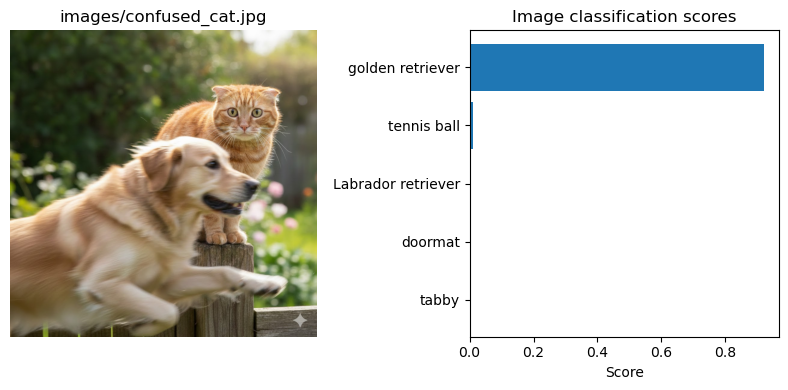

HF dataset use Apache Arrow format for very fast access
1. standardize data access
2. zero copy and parallel access
3. every dataset is a memory map file
Code
from datasets import load_dataset# loads ds & stores in arrow format (locally)ds = load_dataset("cifar10")ds.cache_files # show local cache# save to directory (arrow)ds.save_to_disk(output_dir) # fast load from directory (arrow)ds.load_from_disk(input_dir)
Save specific subsets (train, test, …)
Code
# save as csv for smaller individual data setds["train"].to_csv("train.csv", index=None) # save as parquet for long-term efficient storage ds["train"].to_parquet("train.parquet") # or loop over indivdual subsetsfor split, ds_split in ds.items(): ds_split.to_csv(f"split-{split}.csv", index=None)
/Users/manke/micromamba/envs/pytorch/lib/python3.13/site-packages/tqdm/auto.py:21: TqdmWarning: IProgress not found. Please update jupyter and ipywidgets. See https://ipywidgets.readthedocs.io/en/stable/user_install.html
from .autonotebook import tqdm as notebook_tqdm
Code
import matplotlib.pyplot as pltdef show_pred(output, img_path):# Extract scores and (short) labels from output labels = [o['label'] for o in output] scores = [o['score'] for o in output]# labels = [res.label for res in output]# scores = [res.score for res in output] short_lab = [lbl.split(",")[0] for lbl in labels]# get image from img_path img = Image.open(img_path) fig, ax = plt.subplots(1, 2, figsize=(8, 4)) ax[0].imshow(img) ax[0].set_title(img_path) ax[0].axis('off') ax[1].barh(short_lab, scores) ax[1].set_xlabel("Score") ax[1].set_title("Image classification scores") ax[1].invert_yaxis() plt.tight_layout() plt.show()show_pred(output, img_path)
Using a slow image processor as `use_fast` is unset and a slow processor was saved with this model. `use_fast=True` will be the default behavior in v4.52, even if the model was saved with a slow processor. This will result in minor differences in outputs. You'll still be able to use a slow processor with `use_fast=False`.
Device set to use mps:0

Source Code
---title: Huggingfacejupyter: pytorchcategories: - risks - data - modelsdescription: Resources for Data and Modelsdraft: falseeval: falseimage: https://huggingface.co/datasets/huggingface/brand-assets/resolve/main/hf-logo.svg---## Data from HuggingfaceHF is a very useful resource for puclically shared dataset: [Huggingface Datasets](https://huggingface.co/datasets){target="_blank" rel="noopener"}It is a public resource and it is **not validated**. Use it critically and at your own risk.**Example:** CIFAR-10 @ HF [https://huggingface.co/datasets/uoft-cs/cifar10](https://huggingface.co/datasets/uoft-cs/cifar10){target="_blank" rel="noopener"}::: {.callout-warning}### Specific Warnings- undocumented origin or intended use- missing metadata- unbalanced, shallow- limitation & biases- legal issues & privacy concerns - Reference: [Large-Scale Analysis of HF Datasets (2024)](https://arxiv.org/html/2401.13822v1){target="_blank" rel="noopener"}:::### Load```{python}#| label: cifar10_from_hf# HF datasets != tochvision datasetsfrom datasets import load_datasetds_name ="cifar10"# = "uoft-cs/cifar10"ds_hf = load_dataset(ds_name) # ds = dictionary of Datasetstrain_hf = ds_hf["train"]test_hf = ds_hf["test"]cifar_classes = train_hf.features['label'].names``````{python}#| label: other#| eval: false#| echo: falsefile_name ='file.csv'# also URL is possibleds = load_dataset('csv', data_files=file_name, sep=";") # also other formats: json, jsonl, parquet# multiple data setsurl ="https://..../"# some urlfiles_names = {"train": f"{url}train.json", "validation": f"{url}validation.json"}ds = load_dataset('json', data_files=file_names, field="data") # notice ds can contain multiple datasets ds["train"], ds["validation"]```### Dice and Slice- shuffle & split- select and filter- rename, remove and flatten- map```{python}#| label: slice_and_dice#| eval: falseSEED=42ds.shuffle(seed=SEED)ds.train_test_split(test_size=0.1)# accessing rowsds.select([0, 17, 24, 52]) # select specific indicesds.shuffle().select(range(4)) # select random indicesds.filter(lambda x: x["title"].startswith("T")) # filter by condition# accessing columns df['parent']# flattens nested columns: df['parent']['child'] --> df['parent.child']ds.flatten() # customize function on each row in datasetdef my_function(row):return f(row)ds.map(my_function)# batched processes: parallel and memory efficientds.map(my_function, batched=True, batch_size=64)```### ReformatSometimes is useful to access datasets as dataframes (for data explorations and plotting). This can be done by resetting the format:```{python}#| label: change_format# changes __getitem__ access method: # arrowtable --> dataframeds.set_format("pandas") # ds[0] return dataframesds.reset_format() # ds[0] returns Arrow format (default) df = ds.to_pandas()# typical pandas application# simple label countdf["label"].value_counts()# grouped label countdf.groupby("tissue")["label"].value_counts() ```### Save and LoadHF dataset use `Apache Arrow` format for very fast access 1. standardize data access 2. zero copy and parallel access 3. every dataset is a memory map file```{python}#| eval: falsefrom datasets import load_dataset# loads ds & stores in arrow format (locally)ds = load_dataset("cifar10")ds.cache_files # show local cache# save to directory (arrow)ds.save_to_disk(output_dir) # fast load from directory (arrow)ds.load_from_disk(input_dir)```Save specific subsets (train, test, ...)```{python}# save as csv for smaller individual data setds["train"].to_csv("train.csv", index=None) # save as parquet for long-term efficient storage ds["train"].to_parquet("train.parquet") # or loop over indivdual subsetsfor split, ds_split in ds.items(): ds_split.to_csv(f"split-{split}.csv", index=None)```### Arrow vs Parquet| Aspect | Arrow | Parquet || -----------------| --------------------------| --------------------------------|| Primary role | In-memory format | On-disk storage format || Memory mapping | Yes (core feature) | No (must decode) || Random row access | Very fast | Slower || Parsing cost | None (zero-copy) | Required (decode + decompress) || File size | Larger (uncompressed) | Much smaller (compressed) || Typical use | Fast access, ML pipelines | Data lakes, analytics, archives || Link |[Arrow](https://arrow.apache.org){target="_blank" rel="noopener"} |[Parquet](https://parquet.apache.org/docs){target="_blank" rel="noopener"} |### Streamingfor huge data that does not fit into memory (or hard drive)```{python}# streamed dataset _cannot_ be indexed directlyds_iterable = load_dataset(ds_name, streaming=True) next(iter(ds_iterable)) # use iteratords_train = ds_iterable.skip(1000) # skip first 1000 (for train)ds_test = ds_iterable.take(1000) # take first 1000 (for test)```### HF Dataset $\to$ PyTorch DatasetUltimately we want to use datasets with (image) **transformations** and **DataLoaders** for batch processing.In PyTorch, we can extend the Dataset class to return transformed image tensors when requested with `__getitem__````{python}#| label: hf2pytorchimport torchfrom torch.utils.data import Datasetclass HFCIFAR10(Dataset):def__init__(self, hf_ds, transform=None):self.hf_ds = hf_ds # e.g. ds["train"]self.transform = transformdef__len__(self):returnlen(self.hf_ds)def__getitem__(self, idx): example =self.hf_ds[idx] img = example["img"] # PIL label =int(example["label"]) # label -> intifself.transform isnotNone:# transform PIL Image to torch.Tensor (3,H,W)# + other transforms specified by transform() img =self.transform(img)# return (transformed) image and labelreturn img, label```As before, it is important to define systematic data transformation that are applied consitently to all batches```{python}#| label: hf_dataset2_pytorch_dstransform = transforms.Compose([# add and adjust as needed ... transforms.ToTensor(),])train_ds = HFCIFAR10(train_hf, transform=transform)test_ds = HFCIFAR10(test_hf, transform=transform)print(type(train_ds))img, label = train_ds[0]print(f'img: {type(img)}{img.shape} label: {label}')```### Data Loaders... can be defined as before```{python}#| label: data_loadersBATCH_SIZE =64train_loader = DataLoader(train_ds, batch_size=BATCH_SIZE, shuffle=True)test_loader = DataLoader(test_ds, batch_size=BATCH_SIZE, shuffle=False)X_train, y_train =next(iter(train_loader))print(f'X_train: {X_train.shape}, y_train= {y_train.shape}')```## Models from Huggingface**Example:** ResNet50 @ HF [https://huggingface.co/microsoft/resnet-50](https://huggingface.co/microsoft/resnet-50){target="_blank" rel="noopener"}::: {.callout-note}### Components- model card: description, intended use, how to use, evaluation, citation, ...- github repo: model (parameters, architecture, config.json, ...)- Inference Providers- HF accounts, spaces and API tokens- search models by: task, libraries, dataset, licenses, languages:::::: {.callout-important}### Task (10 min)- Browse and Explore other Image Classification Models- Find and Run Inference Providers if possible- Report back: - model name - intended use - number of downloads - #parameters - last update - license :::::: {.callout-warning}### Warnings- Bias, Misinformation, Malicous- Privacy concerns and data leakage- Intellectual Property & Licensing Concerns- Malicious Use, security vulnerabilities, dependency risks- Ethical & Legal: Compliance:::### HF API```{python}#| label: hf_api#| eval: trueimport osfrom dotenv import load_dotenvfrom huggingface_hub import InferenceClientfrom PIL import Image# get token for HF accessload_dotenv()token = os.getenv("HF_TOKEN")if token isNone:raiseRuntimeError("HF_TOKEN not found. Check `.env`")client = InferenceClient( headers={"Content-Type": "image/jpeg"}, api_key=token,)img_path ="images/confused_cat.jpg"mod_name ="google/vit-base-patch16-224"output = client.image_classification( image=img_path, model=mod_name)``````{python}#| label: vis_pred#| code-fold: true#| eval: true#| echo: trueimport matplotlib.pyplot as pltdef show_pred(output, img_path):# Extract scores and (short) labels from output labels = [o['label'] for o in output] scores = [o['score'] for o in output]# labels = [res.label for res in output]# scores = [res.score for res in output] short_lab = [lbl.split(",")[0] for lbl in labels]# get image from img_path img = Image.open(img_path) fig, ax = plt.subplots(1, 2, figsize=(8, 4)) ax[0].imshow(img) ax[0].set_title(img_path) ax[0].axis('off') ax[1].barh(short_lab, scores) ax[1].set_xlabel("Score") ax[1].set_title("Image classification scores") ax[1].invert_yaxis() plt.tight_layout() plt.show()show_pred(output, img_path)```### HF Pipeline (local)- Pre-processing - Model - Post-Processing```{python}#| label: hf_image_class#| eval: truefrom transformers import pipelineclf = pipeline( task="image-classification",# model="WinKawaks/vit-tiny-patch16-224",# model="deepmind/vision-perceiver-learned",# model="nvidia/mit-b0", model="microsoft/resnet-50",)output = clf(img_path)show_pred(output, img_path)``````{python}#| label: references#| echo: false#- Carbon Footprint# - Calculate [ML CO2 Impact](https://mlco2.github.io/impact/)# - Track [Code Carbon](https://codecarbon.io/)```